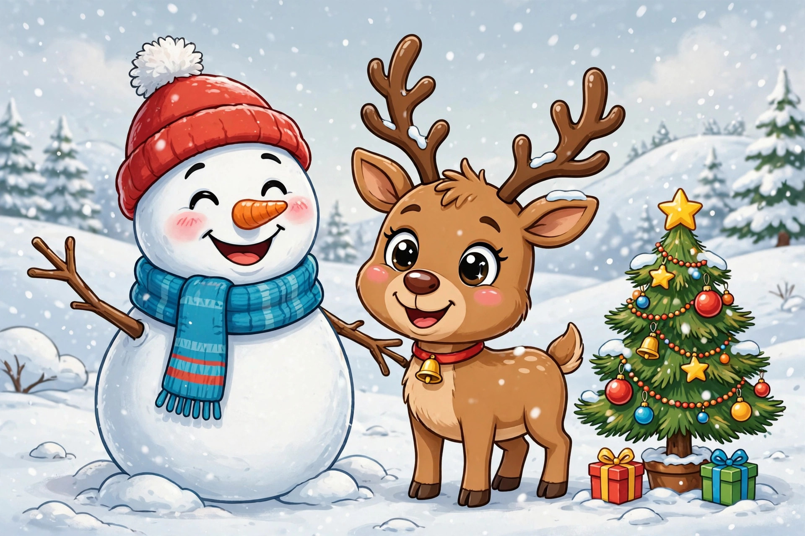

Winter & Christmas Jokes for Kids Ages 9–12

October might feel early for Christmas jokes, but smart comedians rehearse in the fall the way athletes train before the season. By December you will need jokes for class parties, family dinners, holiday cards, and at least one long car ride — and the kid who arrives with a practiced set wins every one of those rooms. Most holiday collections online, including a well-known set of 65 holiday jokes for the whole family, dump snow jokes, Santa jokes, and New Year jokes into one undated pile with no guidance at all. This page sorts them properly. The first section is pure winter — snow, ice, and cold-weather humor that works from the first snowfall straight through to March. The second section is Christmas-only material: Santa, elves, reindeer, and trees, saved for December where they belong. After the jokes come the tools: a guide to matching jokes to holiday moments, a delivery procedure for nervous performers, a comparison of holiday joke styles, a make-your-own winter pun workshop, and a card-writing game. One age note: the winter section suits everyone from about age seven up, while the Christmas wordplay — alphabets with missing letters, elves with record deals — lands best at nine to twelve, when the puns need a second of thought.
Winter jokes that work all season
Winter jokes are the marathon runners of seasonal humor. A snowman joke told in January is still funny; told in February, it is basically reporting the weather. Keep three of these in your pocket for the whole season — at the bus stop, on the ski lift, and during every single snow-day announcement, when they are guaranteed a hero's welcome.
- What do snowmen eat for breakfast? Frosted flakes, served extremely cold.
- Why did the snowman look through the carrot pile? He was picking his nose.
- What kind of ball never bounces? A snowball — it prefers to splat.
- What falls all winter but never gets hurt? Snow, landing softly every single time.
- Why do mountains never get cold? They wear their snowcaps all season.
- What did one snowflake say to the other? You are one of a kind — literally, we all are.
- Why did the girl keep her trumpet outside in January? She wanted to play cool jazz.
- What do you call a snowman in the middle of summer? A puddle with great memories.
- Why are winter days so cheerful? They know spring is on the way, eventually.
- What did the icy road say to the car? Want to go for a spin? Carefully, please.
- How do snowmen travel around town? By icicle — it is slower than it sounds.
- What can you catch in winter with your eyes closed? A cold. Please catch mittens instead.
Christmas jokes: Santa, elves, and reindeer
Christmas jokes have a strict season, and respecting it makes them stronger. A Santa joke in October gets a smile; the same joke in the last week of December gets a roar, because the whole room is already thinking about presents. Notice the pattern in this set: nearly every punchline is a familiar word wearing a costume — an alphabet missing a letter, a pause that is also a Claus, a sheep wishing you well in two languages at once. Costume wordplay is the whole game, and the workshop below shows how it is built.
- What do Santa's elves learn at school? The elf-abet, from A to Zzz in the workshop.
- Why does Santa have three gardens? So he can hoe, hoe, hoe all year round.
- What do you call Santa when he takes a break? Santa Pause — even legends need a rest.
- Who is Santa's favorite singer? Elfis Presley, the king of rock and roll-ing snowballs.
- What kind of music do elves wrap presents to? Wrap music, with a very steady beat.
- What do reindeer say before telling a joke? This one will sleigh you.
- Why did the Christmas tree go to the barber? It needed a trim before the big night.
- What is a Christmas tree's favorite candy? Orna-mints, hanging right within reach.
- What did the gingerbread man put on his bed? A cookie sheet, fresh from the oven.
- Why was the turkey at Christmas dinner so proud? It was completely stuffed and everyone noticed.
- What do sheep say at Christmas? Fleece Navidad, and a woolly New Year.
- What is the difference between the regular alphabet and the Christmas alphabet? The Christmas alphabet has Noel — no L at all.
- What do you call an elf who sings solos? A wrapper with a record deal.
- Why did Santa park his sleigh on the roof? The sign said sleigh parking only, rooftop level.
Holiday knock-knocks and card jokes
Short jokes earn a second career in December: inside holiday cards. A knock-knock needs a partner in person, but written in a card it performs itself — the reader plays both parts and still laughs at the ending. The six below are chosen to fit on a card without crowding out your actual message, which should still exist. A card that is only a joke is a prank; a card with one joke and two kind sentences is a keepsake.
- Knock, knock. Who's there? Snow. Snow who? Snow use — I forgot the rest of the joke again.
- Knock, knock. Who's there? Mary. Mary who? Mary Christmas, and thanks for finally answering.
- Knock, knock. Who's there? Olive. Olive who? Olive the other reindeer think you should open this door.
- Knock, knock. Who's there? Yule. Yule who? Yule be sorry if you miss the holiday cookies.
- Knock, knock. Who's there? Donut. Donut who? Donut open this present until the big day.
- Knock, knock. Who's there? Holly. Holly who? Holly-day greetings from your favorite neighbor.
Which joke for which holiday moment
Holiday rooms differ more than any other audience of the year, so choose deliberately:
- Inside a card → a knock-knock or the alphabet joke. Short, self-contained, and funny on paper without your voice doing the work.
- Class party → winter jokes first, one Christmas joke to finish. Classrooms include everyone, and snow is common ground all season long.
- Family dinner in December → Santa and reindeer jokes, aimed at the table in general. Save any joke about a specific relative's cooking, forever.
- Long car ride → riddle-style winter jokes, told slowly. A joke that takes thirty seconds to solve is worth five one-liners on a highway.
- January, holidays over → winter section only. Christmas jokes in January feel like decorations still up in February — charming for a day, then just late.
How to deliver a holiday joke
Holiday performing has one special hazard: excitement. Everyone is loud, sugared, and distracted, so a rushed joke vanishes. Counter it with this procedure:
- Claim a quiet ten seconds. Ask one person directly — a joke addressed to a person stops a room better than a joke announced to the air.
- Slow down by a third. Holiday jokes are mostly wordplay, and wordplay heard at full party speed is wordplay missed. Speak like the room is frozen, because it might be.
- Pause on the costume word. Elf-abet, Santa Pause, Fleece Navidad — give the disguised word a beat of its own so the picture clicks before you move on.
- End standing still. No jazz hands, no bow, no explaining. Deliver, smile, and let the laugh come to you.
- Retire the joke after two tellings per room. Holiday audiences repeat jokes to each other; let them carry yours. Being quoted is better than being repeated.
What success looks like: you hear your own punchline coming back at you later from someone else in the room, told to a new arrival. Holiday jokes are supposed to travel — yours just got a sleigh ride.
Holiday joke styles compared
| Style | Season length | Best setting | Watch out for |
|---|---|---|---|
| Winter jokes | November to March | Anywhere, anytime | Almost none — the safest set on this page |
| Christmas wordplay | December only | Family dinners, parties | Needs a quiet room; dies in noise |
| Knock-knocks | December, plus cards | Cards, one-to-one | Needs a willing partner in person |
Make your own winter pun
The workshop formula for cold-weather humor runs on sound swaps. Collect winter words that sound like everyday words: snow for no or know, ice for nice, frost for lost, chill for thrill, sleigh for slay, elf for self, yule for you'll. Then drop one into a phrase everyone knows — snow use, ice to meet you, a real chill-seeker — and dress it in the shortest scene you can: a snowman with stage fright has a meltdown, a reindeer comedian promises to sleigh you. Finish by checking the season label: if the joke still works with the Christmas words removed, file it under winter and enjoy it for four months; if it needs Santa to make sense, save it for December and let anticipation do half the work.
The holiday card game
Turn card-writing from a chore into a contest. Every writer gets three cards and ten minutes: each card gets one joke from this page, one sentence of real news from the year, and one sentence wishing the reader something specific — not good holidays in general, but luck at the recital, goals at hockey, or a quiet morning with the new puzzle. Specific beats grand, in wishes exactly as in jokes. When the timer ends, writers trade cards and grade each other's jokes cold — a joke that survives a cold read on paper, with no voice and no pause to save it, is a joke that will survive the mail. Seal the survivors, send them early, and spend December collecting the replies — which, in the long history of holiday mail, is the only scoreboard that has ever mattered.
When the season ends, the Halloween collection uses the exact same costume-wordplay trick — proof that a good formula works in every season.